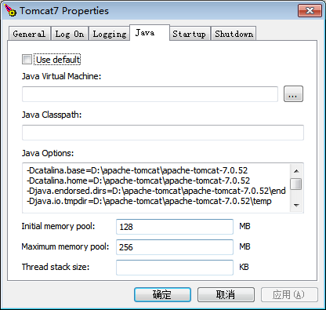

自动化安装
java -jar RaspInstall.jar -install <tomcat_root>
这里的 <tomcat_root> 不是 webapps 目录，而是 tomcat 的根目录。没有错误表示安装成功。安装后，需要重启 Tomcat 服务器生效。
手动安装-Windows
进入tomcat目录，将jspAgent目录复制过来。
如果是下载的 "32-bit/64-bit Windows Service Installer" 安装包，打开bin/tomcatXw.exe，切换到java标签页。
在Java Options下面增加启动参数
-javaagent:C:\Program Files\Apache Software Foundation\Tomcat 7.0\jspAgent\rasp.jar
如果是下载的 "Windows zip" 安装包
打开 bin\catalina.bat, 找到 :setArgs 处：
:setArgs
if ""%1""=="""" goto doneSetArgs
set CMD_LINE_ARGS=%CMD_LINE_ARGS% %1
在 :setArgs 下增加if "%ACTION%" == "start" set JAVA_OPTS=-javaagent:%CATALINA_HOME%\jspAgent\rasp.jar %JAVA_OPTS%
:setArgs
if "%ACTION%" == "start" set JAVA_OPTS=-javaagent:%CATALINA_HOME%\rasp\rasp.jar %JAVA_OPTS%
if ""%1""=="""" goto doneSetArgs
set CMD_LINE_ARGS=%CMD_LINE_ARGS% %1
手动安装-Linux
进入到 tomcat 安装目录(绝对路径包含空格将导致启动失败)，e.g
/opt/apache-tomcat-8.5.6，将jspAgent目录复制过来
在服务器目录执行如下命令
chmod 777 -R jspAgent
- 修改 Tomcat 启动脚本
打开 bin/catalina.sh, 找到如下内容：
elif [ "$1" = "start" ] ; then
if [ ! -z "$CATALINA_PID" ]; then
修改为如下（增加 -javaagent 项）
elif [ "$1" = "start" ]; then
JAVA_OPTS="-javaagent:${CATALINA_HOME}/jspAgent/rasp.jar ${JAVA_OPTS}"
if [ ! -z "$CATALINA_PID" ]; then
对于使用 yum 安装的 tomcat，你需要创建 /etc/tomcat/conf.d/rasp.conf，并写入以下内容
JAVA_OPTS="-javaagent:${CATALINA_HOME}/jspAgent/rasp.jar ${JAVA_OPTS}"
- 验证安装是否成功。
重启 tomcat 服务器，然后检查响应的 Header 是否包含X-Protected-By字样，linux可使用curl -v命令查看。